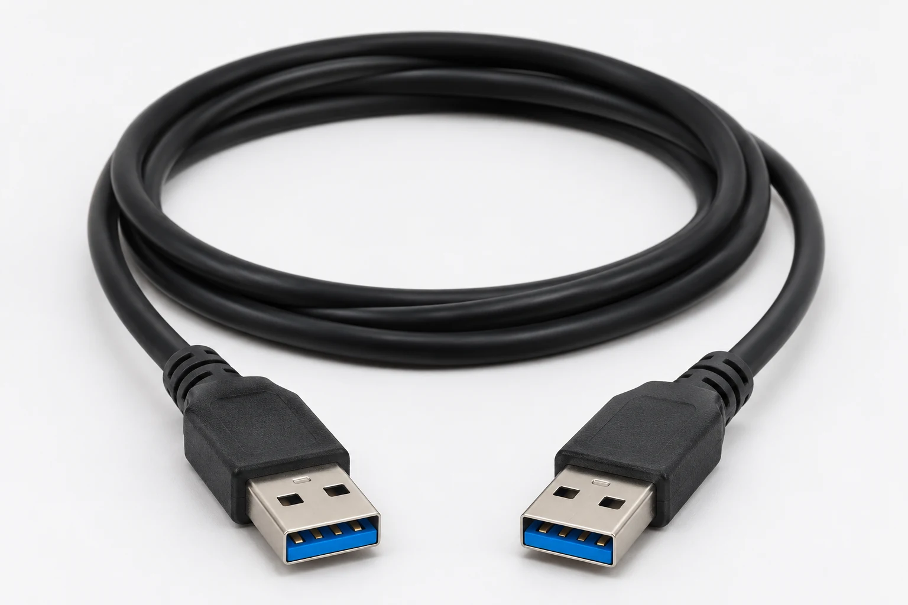

Lidlomix Pro auf dem Connect installieren
Diese Anleitung gilt für das USB-Installationsprogramm für Monsieur Cuisine Connect unter Windows. Halte Computer, Installationspaket und Servicekabel bereit.
Was du brauchst
- Halte deinen Monsieur Cuisine Connect bereit. Das Installationsprogramm prüft vor Änderungen, ob dein Gerät mit dem Paket kompatibel ist.
- Du brauchst einen Computer mit Windows 10 oder 11 und .NET Framework 4.8, das vollständige Installationspaket und Platz für die Rezeptkataloge.
- Für die Schraube der Serviceklappe brauchst du einen Torx-TT10-Bit oder einen passenden Schraubendreher.
USB-A-Servicekabel
Verwende ein für den Android-USB-Serviceanschluss des Connect vorgesehenes Kabel mit zwei gleichen USB-A-Steckern. Steht der Computer direkt neben dem Gerät, reichen 0,5 m. Mit einem 1 m langen Kabel hast du mehr Spielraum.


Der Monsieur Cuisine Smart und weitere Modelle werden noch getestet. Die Unterstützung dieser Geräte ist geplant und steht noch aus.
Installation per USB
Paket entpacken
Entpacke die gesamte ZIP-Datei in einen Ordner auf dem Computer. Starte Lidlomix-Pro-Instalator-USB.exe aus diesem Ordner.
Gerät mit dem Computer verbinden
Schalte den Connect aus und ziehe den Netzstecker. Löse die Schraube an der Unterseite mit einem Torx-TT10-Bit und nimm die Serviceklappe ab. Verbinde den Computer über das Servicekabel mit dem Anschluss Android USB. Schließe den Connect wieder ans Stromnetz an, schalte ihn ein, entsperre den Bildschirm und lass das Gerät im Ruhezustand.

Geschlossene Serviceklappe an der Unterseite des Connect. 
Verwende zur Installation ausschließlich den mit dem Pfeil markierten Anschluss Android USB. Das Kreuz markiert Power PCB USB. Installationsprogramm starten
Wähle die Sprache des Installationsprogramms und klicke auf Start. Lass das Kabel nach dem Neustart angeschlossen, während das Gerät sein Menü lädt. Verbinde USB erst neu, wenn die Anweisung erscheint und das Menü sichtbar ist. Eine Abfrage für USB-Debugging bestätigst du am Gerätebildschirm.
Sicherung aufbewahren
Vor der Installation sichert das Programm die Installationsdateien der Original-App (APK). Bewahre die Sicherung auf, damit du die Original-App bei einem Fehler wiederherstellen kannst. Lass das Kabel angeschlossen, bis das Programm den Abschluss meldet.
Ersten Start prüfen
Prüfe, ob Lidlomix Pro und die App-Auswahl die im Installationsprogramm gewählte Sprache verwenden. Du kannst sie später in den Einstellungen von Lidlomix Pro ändern. Den Standard-Startbildschirm findest du in den Android-Einstellungen unter Startbildschirm.

Sprachauswahl am Gerät
Wenn die Installation stehen bleibt
Über Kopie i logi (Sicherungen und Protokolle) findest du das Protokoll und, falls bereits erstellt, die Sicherung der Original-App. Die Wiederherstellung des gesamten Systems erfordert ein Serviceverfahren. Nenne im Forum Modell, Windows-Version, Schrittnummer und Fehlermeldung. Entferne Seriennummern und Kontodaten aus Protokollauszügen.
Installation im Forum besprechen